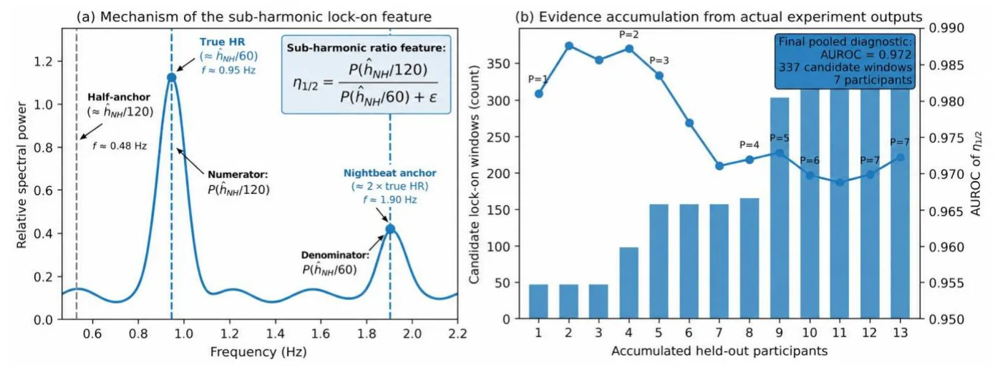
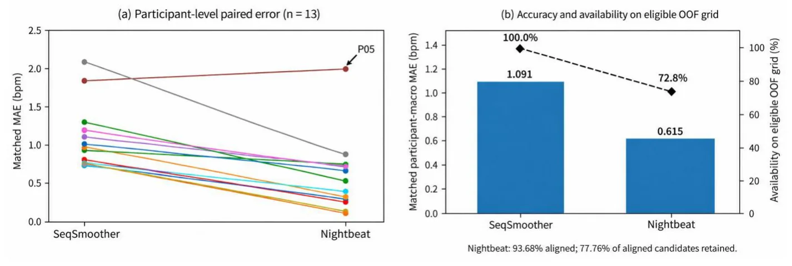

O problema: coortes gigantes sem frequência cardíaca
Estudos longitudinais de saúde em larga escala costumam coletar acelerometria de pulso para medir atividade física e padrões de sono. O UK Biobank, por exemplo, registrou uma semana inteira de acelerômetro de pulso em cerca de 100 mil participantes. Esses dados já existem, estão armazenados e contêm registros de saúde ricos ao longo do tempo. Mas a maioria dessas coortes não incluiu sensores ópticos de frequência cardíaca—a tecnologia que smartwatches modernos usam para medir batimentos.
Recuperar a frequência cardíaca (HR, heart rate) desses acelerômetros já coletados poderia adicionar um sinal fisiológico valioso para análises retrospectivas futuras. O desafio é que o sinal mecânico do coração—chamado balistocardiograma (BCG)—é fraco no pulso e facilmente encoberto por movimento voluntário. Durante o sono, porém, há períodos mais longos de relativa imobilidade, tornando a tarefa viável.
Nightbeat, um pipeline de processamento de sinal publicado anteriormente, combina rastreamento no domínio da frequência, rejeição de artefatos de movimento e pós-processamento temporal fixo para estimar HR de acelerômetros de pulso durante o sono. Ele funciona bem, mas rejeita muitos intervalos onde a qualidade do sinal não passa por seus filtros. Este paper não tenta substituir Nightbeat; em vez disso, investiga se um modelo aprendido pode oferecer um comportamento complementar: cobrir mais intervalos, mesmo que com erro maior.
A ideia: um Transformer que corrige estimativas brutas usando contexto temporal
Os autores apresentam SeqSmoother, um corretor temporal baseado em Transformer que opera sobre janelas de 60 segundos de acelerometria de pulso. A arquitetura não parte do zero: ela usa uma estimativa de frequência intermediária derivada do próprio Nightbeat como âncora, junto com descritores espectrais e uma feature física nova, o sub-harmonic ratio, projetada para identificar quando o rastreador de frequência trava em um harmônico—tipicamente o dobro da frequência cardíaca real.
Todas as features de inferência vêm exclusivamente da acelerometria de pulso. O ECG é usado apenas para construir os rótulos de referência de HR e pesos de qualidade dos rótulos de treino. Na inferência, o modelo não vê ECG. Isso é importante: o objetivo é recuperar HR de dados que nunca tiveram sensor cardíaco.
O SeqSmoother processa sequências de 40 janelas consecutivas (cada uma de 60 s, com passo de 15 s, portanto 75% de sobreposição). Cada janela é representada por um vetor de 26 dimensões: 18 bins de densidade espectral de potência (PSD) log-normalizada na banda BCG, uma estimativa de pico espectral, um descritor de relação sinal-ruído de banda, a âncora Nightbeat derivada do acelerômetro, o sub-harmonic ratio e um indicador de disponibilidade/qualidade da âncora Nightbeat.

Como funciona o sub-harmonic ratio
Uma falha comum em rastreadores de frequência no domínio espectral é travar perto do dobro da frequência cardíaca real—um fenômeno chamado harmonic lock-on. Quando isso acontece, a estimativa intermediária aponta para 2f₀ em vez de f₀, onde f₀ é a frequência cardíaca verdadeira.
Os autores propõem uma feature física para detectar isso: o sub-harmonic ratio η₁/₂. A ideia é simples: se a âncora Nightbeat ĥ_NH está travada perto de 2f₀, então deve haver energia espectral perto de ĥ_NH/2, que corresponde à frequência cardíaca real. O ratio η₁/₂ compara a potência em uma janela estreita ao redor de ĥ_NH/2 com a potência total na banda BCG.
Formalmente, seja P(f) a PSD da magnitude do acelerômetro filtrada entre 0,5 e 4,0 Hz. Define-se P₁/₂ como a integral de P(f) em [ĥ_NH/2 − 0,05, ĥ_NH/2 + 0,05] Hz, e P_total como a integral de P(f) em [0,5, 4,0] Hz. Então η₁/₂ = P₁/₂ / P_total. Valores altos de η₁/₂ sugerem que a âncora está travada no harmônico.
Os autores validam essa feature separadamente usando um diagnóstico baseado em referência: identificam janelas candidatas onde a âncora Nightbeat está perto do dobro da HR de referência do ECG (|ĥ_NH − 2·HR_ref| < 2,5 bpm e HR_ref ∈ [40, 75] bpm). Através de 337 janelas candidatas de 7 participantes held-out, o sub-harmonic ratio atinge AUROC de 0,972 para identificar lock-on. Isso confirma empiricamente que a feature captura o fenômeno físico.

Arquitetura do Transformer e treinamento
O SeqSmoother usa um Transformer encoder padrão com 4 camadas, 4 cabeças de atenção, dimensão de modelo 128 e dimensão feedforward 256. A sequência de entrada tem 40 janelas, cada uma representada pelo vetor de 26 features. O modelo produz uma saída por janela, que é então mapeada para a estimativa final de HR em bpm por uma camada linear.
O treinamento usa perda L1 (MAE) ponderada. Cada janela de treino recebe um peso q ∈ [0,1], definido como a fração de amostras de ECG marcadas como válidas naquele intervalo de 60 s. Isso down-pondera rótulos de referência menos confiáveis, mas não impõe um limiar duro: janelas com qualquer q ≥ 0 são incluídas no treino. Importante: q descreve a confiabilidade do rótulo de referência ECG, não a qualidade do sinal do acelerômetro ou a presença de movimento. O modelo não vê q na inferência.
A avaliação usa 13 folds disjuntos por participante: cada fold treina em 12 participantes e testa em 1. Isso trata o participante como a unidade estatística independente, evitando vazamento de informação temporal intra-participante entre treino e teste.
Resultados: precisão e cobertura
Nos 13 participantes held-out, o SeqSmoother produziu 20.792 predições fora da amostra (out-of-fold, OOF). O MAE médio por participante (participant-macro MAE) foi 1,60 ± 0,53 bpm, com intervalo de confiança bootstrap de 95% entre 1,35 e 1,90 bpm. O MAE descritivo pooled foi 1,61 bpm e o RMSE 3,15 bpm. A correlação de Pearson mediana por participante foi r = 0,771 (IQR: 0,683–0,833), e a correlação pooled centrada por participante foi r = 0,765.
Esses números sozinhos não dizem muito. O paper faz uma comparação pareada com a implementação oficial do Nightbeat, executada sob o mesmo protocolo de janelas de 60 s e passo de 15 s. Dos 20.792 endpoints OOF do SeqSmoother, 19.478 (93,68%) alinharam com um timestamp candidato do Nightbeat. Desses, o Nightbeat reteve uma estimativa final para 15.146 intervalos—77,76% de retenção entre candidatos alinhados, ou 72,85% de disponibilidade de predição final em relação à grade OOF completa do SeqSmoother.
Aqui está o trade-off central: nos exatos 15.146 intervalos retidos pelo Nightbeat, o MAE participant-macro foi 1,09 bpm para o SeqSmoother e 0,62 bpm para o Nightbeat. A diferença pareada foi +0,48 bpm favorecendo o Nightbeat, com IC 95% de [+0,32, +0,64] bpm e teste de Wilcoxon p = 0,00049. O Nightbeat é mais preciso em termos absolutos nos intervalos que ele decide manter.
Mas o SeqSmoother fornece predições em 100% da grade OOF elegível, enquanto o Nightbeat cobre apenas 72,85%. Nos 4.332 intervalos candidatos alinhados que o Nightbeat rejeitou, o SeqSmoother obteve MAE de 2,66 bpm, RMSE de 4,44 bpm e correlação descritiva pooled r = 0,815. Esses intervalos rejeitados são substancialmente mais difíceis, mas a correlação de 0,815 sugere que ainda contêm informação temporal de HR.

O que os números realmente significam
O paper não afirma que o SeqSmoother supera o Nightbeat. A interpretação correta é que há um trade-off entre precisão e cobertura. O Nightbeat usa um pipeline de controle de qualidade rigoroso e abstém-se de produzir estimativas quando a confiança é baixa. Isso resulta em erro absoluto menor nos intervalos retidos. O SeqSmoother, por ser um modelo aprendido com contexto temporal, continua produzindo estimativas mesmo em regiões onde o Nightbeat se abstém.
Nos intervalos retidos pelo Nightbeat, o SeqSmoother tem uma correlação centrada por participante ligeiramente maior (0,878 versus 0,854), mas os autores reportam isso de forma descritiva, sem reivindicar superioridade estatística estabelecida. O valor histórico de 0,88 bpm publicado para o Nightbeat não é usado para inferência pareada porque foi gerado sob um protocolo diferente.
A rejeição do Nightbeat funciona como um indicador operacional de janela difícil, mas não é um rótulo puro de movimento do pulso. O score de qualidade q derivado do ECG é tratado estritamente como qualidade do rótulo de referência, não como proxy de movimento ou qualidade do acelerômetro. A construção de referência foi verificada diretamente entre os dois caminhos de avaliação: em 19.478 intervalos alinhados, 99,95% dos valores de referência ECG pareados concordaram dentro de 0,01 bpm. A diferença de precisão não é explicada por construção inconsistente de alvo.
Validação do sub-harmonic ratio como diagnóstico
A análise do sub-harmonic ratio fornece uma contribuição mecanística separada. O diagnóstico baseado em referência identificou 337 janelas candidatas de lock-on harmônico em 7 participantes held-out. O AUROC pooled de 0,972 suporta a hipótese de que a energia em metade de uma âncora potencialmente dobrada é informativa para lock-on de frequência harmônica.
Os autores não atribuem uma porção específica da melhoria de regressão total exclusivamente a η₁/₂, porque as janelas se sobrepõem e o SeqSmoother usa conjuntamente informação espectral, âncora e temporal. A feature é um componente do vetor de entrada, não um módulo isolado. Mas a validação separada confirma que ela captura o fenômeno físico que foi projetada para detectar.
O que o paper não mostra
O SeqSmoother não é validado prospectivamente ou em coortes externas. Todos os resultados vêm de folds disjuntos por participante dentro do mesmo dataset (NightbeatDB). Não há validação clínica, e os autores não fazem afirmações sobre uso clínico ou em escala populacional sem validação futura.
O estudo não compara o SeqSmoother com outros métodos aprendidos de estimativa de HR a partir de acelerômetro. A baseline é o Nightbeat, um pipeline de processamento de sinal forte. Não há ablation detalhada isolando a contribuição do Transformer versus as features espectrais versus a âncora Nightbeat. O paper também não explora variantes de arquitetura (número de camadas, cabeças, tamanho de sequência).
O indicador de qualidade q é derivado do ECG de referência e não está disponível na inferência. Isso significa que o modelo não tem acesso direto a uma medida de confiabilidade do próprio rótulo de treino durante a predição. O qNH (disponibilidade/qualidade da âncora Nightbeat) está disponível, mas é uma medida diferente.
O paper não aborda o custo computacional ou a viabilidade de implantação em dispositivos embarcados. O Transformer é relativamente pequeno (4 camadas, 128 dimensões), mas a análise espectral e a extração de features ainda exigem processamento. Também não há discussão sobre latência ou processamento em tempo real.
Implicações e direções futuras
Os autores interpretam os achados como evidência de um trade-off entre modelagem temporal aprendida e processamento de sinal com controle de qualidade. Isso motiva sistemas híbridos futuros que preservem estimativas Nightbeat de alta confiança enquanto usam modelagem temporal aprendida para regiões incertas ou rejeitadas. Tais sistemas exigiriam validação prospectiva e externa antes de afirmações clínicas ou em escala populacional.
A abordagem tem relevância prática para estudos longitudinais existentes. Coortes como o UK Biobank já coletaram acelerometria de pulso de dezenas de milhares de participantes sem sensores ópticos de HR. Se validado externamente, o SeqSmoother ou sistemas híbridos semelhantes poderiam recuperar informação fisiológica cardíaca desses dados já armazenados, adicionando uma dimensão de análise retrospectiva.
O sub-harmonic ratio demonstra que features físicas informadas podem ser integradas em modelos aprendidos. Isso sugere uma direção de pesquisa: em vez de tratar deep learning e processamento de sinal como abordagens opostas, projetar features que capturem fenômenos físicos conhecidos e deixar o modelo aprender como combiná-las com contexto temporal.
O paper também levanta uma questão metodológica importante: como avaliar sistemas que fazem trade-offs entre precisão e cobertura? Reportar apenas MAE ou correlação em intervalos retidos pode favorecer sistemas conservadores que se abstêm com frequência. Reportar apenas cobertura pode favorecer sistemas que sempre predizem, mesmo quando não deveriam. A comparação pareada explícita, com análise de disponibilidade e erro condicional em intervalos rejeitados, oferece uma estrutura mais completa.
O que fica
- SeqSmoother usa Transformer para estimar HR de acelerômetro de pulso durante o sono, atingindo MAE de 1,60 bpm em 13 participantes held-out, mas é menos preciso que Nightbeat (0,62 bpm) em intervalos retidos.
- O trade-off: Nightbeat cobre 72,85% dos dados com erro menor; SeqSmoother cobre 100% com erro maior (2,66 bpm) em regiões rejeitadas, mas correlação 0,815 sugere que ainda há informação temporal útil.
- Sub-harmonic ratio atinge AUROC 0,972 para detectar lock-on harmônico (quando o rastreador trava no dobro da frequência real), validando uma feature física informada dentro de um modelo aprendido.
- Aplicação prática: recuperar HR de coortes longitudinais gigantes (UK Biobank, 100 mil participantes) que coletaram acelerometria mas nunca tiveram sensor óptico—validação externa ainda necessária.
Paper original: Deep Learning for Sleep Heart Rate Estimation from Accelerometers: Toward Population-Scale Cardiac Insight Without Optical Sensors
Comentários
Nenhum comentário ainda. Seja o primeiro.